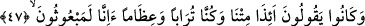

Bu âyet-i kerîmede uzaklık ateşinin iliklere işleyen yakıcı hararetine ve mahrûmiyete;
ilâhî kızgınlık ve kahrın yakıcılığına; diğer gölgelerde olduğu gibi yakînî îman serinliği
olmayan cehâlet ağacının gölgesine; dünyayı ve lezzetlerini elde etmeyi istemelerinden
dolayı susuzluklarının harâreti sönmeyeceğine; yine dünyayı, süslerini ve aldatıcı
nakışlarını bırakmaya yardımcı olacak faydalı bir hikmet de bulamayacaklarına; aksine
dünyanın istirâhati ve râhatı olmayan şeylerini istemeğe devam edeceklerine işâret
bulunmaktadır. Şüphesiz onlar, bundan önce varlık içinde sefâhate dalmışlardı. Yâni
onların, kendisinde himmetin şerefi ve yakînin serinliği bulunmayan cehâlet ağacının
gölgelerine sığınmaları, aynî varlığa girmeden önce lezzet ve şehvetleri sevmeğe yatkın
olan zâtî kabiliyetleri sebebiyledir. Yine onlar cehalet ağacının gölgesinde gölgelenmek
isterler. Çünkü onlar ezelde nefis ve dünya sevgisini içlerine yerleştirmişlerdir. Çünkü
büyük günah olan şirk, nefis ve dünyayı sevmektir. Nitekim Peygamberimiz (s.a.)’in
“Dünyayı sevmek bütün günahların başıdır”[217] buyurmaktadır.
Şâir der ki:
Şehvetperest nefse itâat etme,
Onun her saat başka bir kıblesi vardır.
Akıllı kimse için dünya değersizdir
Çünkü her vakit bir başkasına mekân olmuştur.
47. Ve diyorlardı ki: Biz öldükten, toprak ve kemik yığını hâline geldikten sonra,
biz mi bir daha diriltileceğiz?
Onlar, müşrik oldukları halde ve inad ve azgınlıklarının en ileri derecede bulunması
sebebiyle “biz öldükten, toprak ve kemik yığını hâline geldikten sonra, biz mi bir
daha diriltileceğiz?” diyorlardı. Yâni, etlerimizden ve derilerimizden bir kısmı toprak,
bir kısmı da çürümüş ve dağılmış kemik hâline geldikten sonra mı yeniden
diriltileceğiz. Âyet-i kerîmede toprağın kemikten önce zikredilmesi, insanın topraktan
dirilmesinin uzak bir ihtimal gibi görünmesindendir. Yine âyet-i kerîmede öldükten
sonra dirilmenin, bedenin toprak olup kemiklerin çürümesiyle kayıtlanmış olması,
inkârcıların husûsiyle çürümeden sonra dirilmeye inanmadıkları için değil, beden hiç
bozulmasa dahi onların öldükten sonra dirilmeyi kesinlikle inkâr etmeleri sebebiyledir.
Bu kayıtlama, dirilme olayına büsbütün aykırı olan durumu zikredip onların inkârlarını
güçlendirmek içindir. Onların inkârlarının dönüp durduğu yer, aslında fiilen dirilmenin
içinde olup ancak çürümüş kemik ve toprak olma durumundaki dirilme değil, aksine
öldükten sonraki bu hale ve ölümden sonra dirilmeğe istidadlı olmalarıdır. Bunun da
açık anlamı, çürümüş kemik ve toprak olduktan sonra dirilmeyi inkâr etmektir.